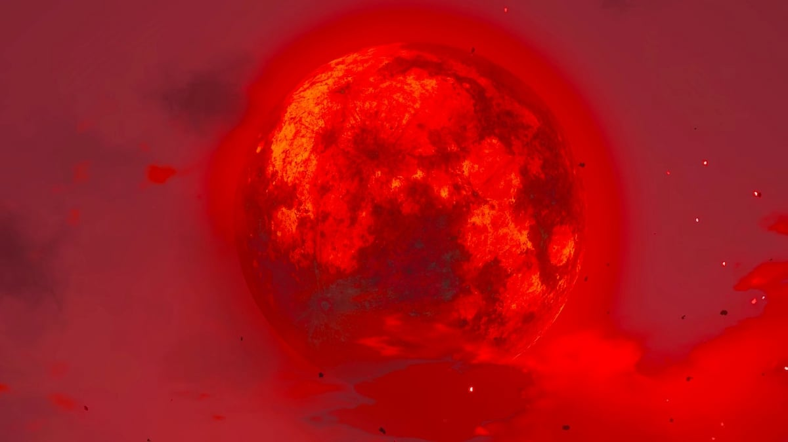
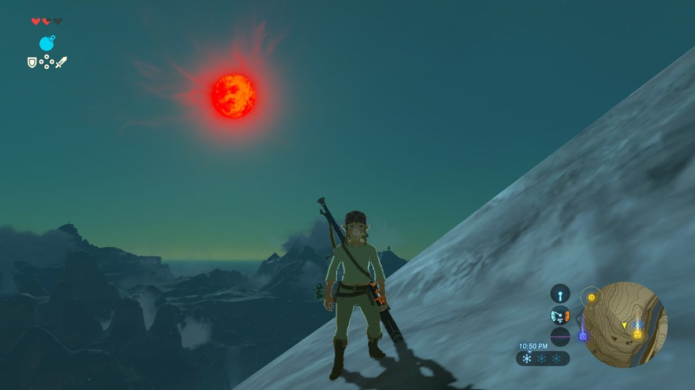

血月之夜：红月升起，世界刷新（游戏实机截图）
很多玩家以为血月是随机的，其实它有固定周期和明确规则。搞懂周期能规划刷怪路线，搞懂刷新清单能知道什么值得等血月，搞懂做菜窗口能批量做出大成功料理。本篇把这三点一次讲清。
- 王国之泪的血月周期是 144 分钟实际游玩时间，约游戏内 6 天；168 分钟/7 天是旷野之息的数字。
- 计时从时光神殿接到主线“紧闭之门”后开始；开菜单、读图不计时。睡觉本身不会加快计时，但如果当晚已排定血月，睡过午夜就会触发血月。
- 到点时若人在地底、神庙、神殿或城堡内，血月顺延到下一晚。
- 刷新：被打倒的怪物（含头目）、野外及敌人手中的武器；不刷新：宝箱、呀哈哈、矿床、野外采集物。
- 做菜窗口 23:30 至次日 00:15 必大成功；强制血月（恐慌血月）是游戏内置的内存过载保护机制，内存不足时自动触发、提前刷新世界，并非玩家可主动调用的功能。
一、周期：144分钟
王国之泪的血月周期是 144 分钟实际游玩时间，约游戏内 6 天。注意不要和旷野之息搞混：旷野之息的周期是 168 分钟、约 7 天，王国之泪的计时器缩短到了 144 分钟（来源：Zelda Wiki，引 ZeldaMods 技术解析）。如果你按 168 分钟等血月，会发现血月总是“提前”到来——不是游戏乱了，是王国之泪的周期本来就更短。
二、计时规则：什么算时间、什么不算
血月计时从时光神殿接到主线“紧闭之门”后开始。之后只有实际游玩时间算数：开菜单、读图加载都不计时。睡觉本身不会让计时走得更快，所以没排定血月的那晚，睡再久也等不来血月；但如果当晚已经排定血月，睡过午夜就会触发。想等血月就去正常游玩、做任务、探索，时间到了自然会来。

血月过场：到点时全图怪物与武器刷新（游戏实机截图）
三、顺延规则：在哪里会推迟
到点时如果林克在地底、神庙、神殿或城堡内，血月不会在里面触发，而是顺延到下一晚。规划刷怪路线时要注意：想在当晚等血月，就别在到点前钻进神庙或地底，否则要多等一晚。
四、刷新清单：刷什么、不刷什么
| 刷新 | 不刷新 |
|---|---|
| 被打倒的怪物（含头目） | 宝箱 |
| 野外武器 | 呀哈哈 |
| 敌人手中的武器 | |
| 城堡内的近卫武器等野外武器 | |
| 矿床（矿石） | |
| 野外采集物（蘑菇、植物等） |
这张清单决定了血月的用途：刷怪素材、刷武器、刷头目掉落，血月是最好的闹钟；但想靠血月刷宝箱、呀哈哈、矿石与野外采集物，是刷不出来的，别白等——矿床与采集物各自只在林克不在同一地图区域时有小概率刷新，与血月无关。
五、血月夜做菜与强制血月
血月夜 23:30 至次日 00:15 做料理必定大成功，批量做高级料理就卡这个窗口，详见本站料理机制全解。另外还有一种强制血月：游戏在内存过载时会触发“恐慌血月”提前刷新世界，这是游戏内置的内存保护机制，会自动发生、不是玩家能主动调用的功能，普通玩家按正常周期等血月就够了，不用专门去学。

血月夜：23:30后做菜必大成功（游戏实机截图）
常见问题
- 血月周期到底是多少？144 分钟实际游玩时间，约游戏内 6 天（旷野之息才是 168 分钟/7 天）。
- 睡觉能催血月吗？睡觉本身不会加快计时：没排定血月的那晚睡再久也等不来；但当晚已排定血月时，睡过午夜就会触发。
- 血月刷宝箱吗？不刷。宝箱、呀哈哈、矿床与野外采集物都不随血月刷新。
相关攻略：料理机制全解、人马完全指南、海拉鲁城堡探索完全指南。